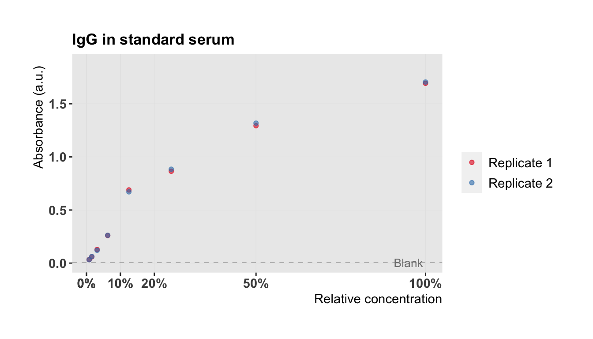
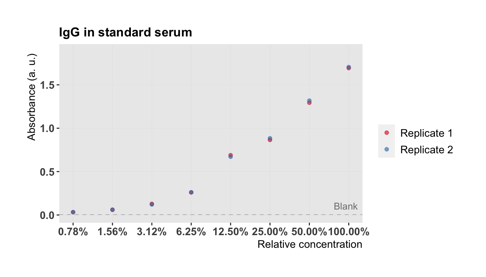

3 Plot data
For convenience, we first define a plot theme:
3.1 Define plot theme
min.absorb <- min(blanks$blank)
max.absorb <- max(standard$absorbance)
font.size <- 11
# Define theme for plotting
#' @param title.hjust horizontal alignment of plot title
#' @param legend_pos legend position
#' @return theme for ggplot
theme_plot <- function(
title.hjust = 0, legend.pos = "right", legend.dir = "vertical") {
theme(
axis.text = element_text(
size = font.size,
face = "bold"
),
axis.title.x = element_text(
size = font.size,
hjust = 1
),
axis.title.y = element_text(
size = font.size,
hjust = 0.9
),
plot.title = element_text(
size = font.size + 2,
face = "bold",
hjust = title.hjust
),
plot.margin = rep(grid::unit(1, "cm"), 4),
strip.text.x = element_text(size = font.size),
strip.text.y = element_text(size = font.size),
strip.background = element_rect(fill = "white"),
axis.line = element_blank(),
legend.position = legend.pos,
legend.direction = legend.dir,
legend.text = element_text(size = font.size),
legend.title = element_text(size = font.size)
) +
background_grid(
major = "yx",
minor = "",
colour.major = "grey90",
size.major = 0.2
)
}3.2 Plot standard
Now let’s plot the standard:
plot.std <- function(semilog = FALSE) {
p <- ggplot(data = standard) +
scale_color_brewer(
palette = "Set1",
labels = paste("Replicate", seq(n.repl.std)),
guide = guide_legend(title = "")
) +
scale_y_continuous(
limits = c(min.absorb, max.absorb + 0.1 * max.absorb)
) +
geom_hline(
yintercept = mean(blanks$blank),
lty = 2,
color = "grey60",
lwd = 0.2
) +
theme_plot()
if (semilog == TRUE) {
p <- p + geom_point(aes(concentration, absorbance, color = replicate), alpha = 0.6) +
labs(
x = "Relative concentration",
y = "Absorbance (a. u.)",
title = "IgG in standard serum"
) +
scale_x_continuous(breaks = concentrations, labels = scales::percent, trans = "log2") +
annotate("text",
label = "Blank",
x = max(standard$concentration) - 0.05 * max(standard$concentration),
y = max(blanks$blank) + 20 * max(blanks$blank),
size = 3.5,
color = "grey50"
)
}
else {
p <- p + geom_point(
aes(concentration, absorbance, color = replicate),
alpha = 0.6
) +
labs(
x = "Relative concentration",
y = "Absorbance (a.u.)",
title = "IgG in standard serum"
) +
scale_x_continuous(breaks = round(concentrations,1),
labels = scales::percent) +
annotate("text",
label = "Blank",
x = max(standard$concentration) - 0.05 * max(standard$concentration),
y = max(blanks$blank) + 0.2 * max(blanks$blank),
size = 3.5,
color = "grey50"
)
}
p
}
plot.std()
We see that the concentration of the dilution series is on a logarithmic scale. Let’s replot the results with \(\log_2\)-transformed concentrations (\(\log_2\) for a dilution factor of 2):

3.3 Plot biological samples
Now let’s have a look at our actual data. We measured IgG in serum of four donors on five different time points. We first define a plot for our biological samples and then plot it together with the standard curve to have a better overview.
# select HV
ID.selected <- c("BD1989", "MS1984", "SM1988", "HJ1992")
donors.av <- donors.av %>% dplyr::mutate(ID = c(rep("BD1989", 5), rep("MS1984", 5), rep( "SM1988", 5), rep("HJ1992", 5)))
donors.av## # A tibble: 20 x 4
## donor time absorbance.av ID
## <fct> <int> <dbl> <chr>
## 1 1 0 0.236 BD1989
## 2 1 7 0.497 BD1989
## 3 1 30 0.660 BD1989
## 4 1 60 0.804 BD1989
## 5 1 180 0.382 BD1989
## 6 2 0 0.434 MS1984
## 7 2 7 0.629 MS1984
## 8 2 30 0.776 MS1984
## 9 2 60 0.760 MS1984
## 10 2 180 0.660 MS1984
## 11 3 0 0.347 SM1988
## 12 3 7 1.25 SM1988
## 13 3 30 0.837 SM1988
## 14 3 60 0.768 SM1988
## 15 3 180 0.563 SM1988
## 16 4 0 0.932 HJ1992
## 17 4 7 1.17 HJ1992
## 18 4 30 1.01 HJ1992
## 19 4 60 0.845 HJ1992
## 20 4 180 0.950 HJ1992plot.donors <- ggplot() +
geom_point(data = donors.av,
aes(time, absorbance.av, color = donor), alpha = 0.7) +
geom_line(data = donors.av,
aes(time, absorbance.av, group = donor, color = donor), alpha = 0.6, lwd = 0.5) +
labs(
x = "Days after vaccination", y = "Absorbance (a. u.)",
title = "IgG in serum of healthy volunteers"
) +
scale_color_viridis(
begin = 0.2, end = 0.8, discrete = TRUE,
labels = paste("Donor", seq(n.donors)), guide = FALSE#guide_legend(title = "")
) +
scale_y_continuous(limits = c(min.absorb, max.absorb + 0.1 * max.absorb)) +
scale_x_continuous(breaks = tpoints) +
geom_hline(
yintercept = mean(blanks$blank),
lty = 2, color = "grey60", lwd = 0.2
) +
annotate("text",
label = "Blank",
x = max(donors$time) - 0.1 * max(donors$time),
y = max(blanks$blank) + 20 * max(blanks$blank),
size = 3.5, color = "grey50"
) +
background_grid(
major = "yx", minor = "", colour.major = "grey90", size.major = 0.2
) +
theme_plot() + ylim(0,2)
plot.donors
# select HV
ID.selected <- c("BD1989", "MS1984", "SM1988", "HJ1992")
titer.s <- titer %>%
dplyr::mutate(ID = as.character(ID)) %>%
dplyr::filter(virus == "California") %>%
dplyr::filter(ID %in% ID.selected)
titer.s## # A tibble: 20 x 22
## ID virus virusType time titer log2titer cohort age batch dayOfExp
## <chr> <chr> <chr> <dbl> <dbl> <dbl> <dbl> <dbl> <dbl> <dbl>
## 1 BD19… Cali… A/H1N1 0 16 4 1 25 NA NA
## 2 SM19… Cali… A/H1N1 0 8 3 1 26 NA NA
## 3 MS19… Cali… A/H1N1 0 32 5 1 30 NA NA
## 4 HJ19… Cali… A/H1N1 0 256 8 1 22 NA NA
## 5 BD19… Cali… A/H1N1 7 64 6 1 25 NA NA
## 6 SM19… Cali… A/H1N1 7 256 8 1 26 NA NA
## 7 MS19… Cali… A/H1N1 7 64 6 1 30 NA NA
## 8 HJ19… Cali… A/H1N1 7 512 9 1 22 NA NA
## 9 BD19… Cali… A/H1N1 30 128 7 1 25 NA NA
## 10 SM19… Cali… A/H1N1 30 128 7 1 26 NA NA
## 11 MS19… Cali… A/H1N1 30 128 7 1 30 NA NA
## 12 HJ19… Cali… A/H1N1 30 512 9 1 22 NA NA
## 13 BD19… Cali… A/H1N1 60 128 7 1 25 NA NA
## 14 SM19… Cali… A/H1N1 60 128 7 1 26 NA NA
## 15 MS19… Cali… A/H1N1 60 128 7 1 30 NA NA
## 16 HJ19… Cali… A/H1N1 60 512 9 1 22 NA NA
## 17 BD19… Cali… A/H1N1 180 64 6 1 25 NA NA
## 18 SM19… Cali… A/H1N1 180 64 6 1 26 NA NA
## 19 MS19… Cali… A/H1N1 180 64 6 1 30 NA NA
## 20 HJ19… Cali… A/H1N1 180 512 9 1 22 NA NA
## # ... with 12 more variables: animalBlood <chr>, group <chr>,
## # number <chr>, rs8099917 <chr>, rs12979860 <chr>, rs10903035 <chr>,
## # rs10853727 <chr>, rs28383797 <chr>, rs2243248 <chr>, rs2069824 <chr>,
## # ageCenterByCohort <dbl>, ageCenter <dbl>p.titer <- ggplot(data = titer.s) +
geom_point(data=titer.s, aes(time, log2titer, color = ID), alpha = 0.7) +
geom_line(
data = titer.s,
aes(time, log2titer, group = ID, color = ID), alpha = 0.6, lwd = 0.5
) +
labs(
x = "Days after vaccination", y = "log2 HI titer",
title = "Corresponding HI titer"
) +
scale_color_viridis(
begin = 0.2, end = 0.8, discrete = TRUE, guide = FALSE
) +
scale_y_continuous(limits = c(0, max(titer.s$log2titer) + 0.1 * max(titer.s$log2titer))) +
scale_x_continuous(breaks = tpoints) +
background_grid(
major = "yx", minor = "", colour.major = "grey90", size.major = 0.2
) +
theme_plot() +
panel_border()